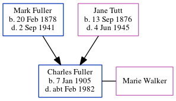

James Richard Edmund Tutt 1877 - c1951
[ Home ] | [ Calendar ] | [ Surnames Index ] | [ Errors ] | [ Family History ]A fitter and waterworks main layer heavy and the child of James Tutt (a general labourer) and Jane Foord (a general shop), James Tutt, the first cousin twice-removed on the father's side of Nigel Horne, was born in Ramsgate, Kent, England on 7 Dec 18771,2,3,4, was baptised there at St Lukes on 13 Aug 1878 and also married Clara Ansley (with whom he had 1 child, James Alfred William) there at Holy Trinity Church on 24 Apr 19055.
During his life, he was living at 18 Clarence Terrace in Ramsgate on 3 Apr 18816; at Hillbrow Road, St Lawrence, Thanet, Kent, England on 31 Mar 19011 - less than a mile from his cousin on his father's side Isaac Horne who was living at 15 Haine Cottages, St Lawrence in Thanet, his cousin on his father's side Charles Horne, cousin on his father's side Edmund Horne and aunt Jane Tutt who were living at 15 Haine Cottages, St Lawrence in Thanet - and his father James who was living at 8 Hillbrow Road, St Lawrence in Thanet -; at 5 Pleasant Place, Margate, Kent on 2 Apr 19112; and at 6 Pleasant Place, Margate, Kent on 29 Sept 19393.
He died c. Aug 1951 in Thanet4.
Parents
- James was born on 16 Jan 1851
- Jane was born in Jul 1854
Children
- James Alfred William was born on 22 Jan 1908
Citations
- 1901 England, Wales & Scotland Census - Findmypast (was age 23 and the son of the head of the household)
- 1911 Census for England & Wales - Findmypast (was age 32 and the head of the household)
- 1939 Register - Findmypast (was recorded at this address)
- England & Wales deaths 1837-2007 - Findmypast
- Kent, Canterbury Archdeaconry marriages 1538-1928 - Findmypast
- 1881 England, Wales & Scotland Census - Findmypast (was age 3 and the son of the head of the household)
Media
England & Wales births 1837-2006 - BMD/B/1878/1/AZ/000575/044
England & Wales deaths 1837-2007 - BMD/D/1951/3/AZ/000847/038
1911 England, Wales & Scotland Census Transcription - GBC-1911-RG14-04494-0429-1
Kent, Canterbury Archdeaconry marriages 1538-1928 - GBPRS/CANT/M/97034876/1
England Marriages 1538-1973 - R_848238413
England & Wales marriages 1837-2008 - BMD/M/1905/2/AZ/000385/146
1939 Register Transcription - TNA-R39-1755-1755G-002-13
England, Births & Baptisms 1538-1975 Transcription - R_884621343
1939 Register - TNA/R39/1755/1755G/002/11
Family Tree
Map
Generated by ged2site. Last updated on Jul 3, 2024
Known Issues
Census information missing between Census UK 1881 and Census UK 1901